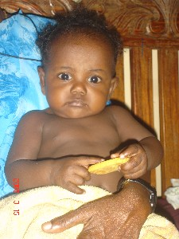

life
ɑbcuɡɑ आबचूगा MORPH: ɑb-cuɡɑ. Etym: Bale; South Andaman; बाले; दक्षिणी अण्डमान. N सं. married man; विवाहित पुरुष. SD: life, जीवन, people, लोग.
ɑbcupɑl आबचूपाल MORPH: ɑb-cupɑl. Etym: Bale; South Andaman; बाले; दक्षिणी अण्डमान. N सं. married woman; विवाहित महिला. SD: life, जीवन, people, लोग.
ɑbdɑrekɑ आबदारेका MORPH: ɑb-dɑrekɑ. Etym: Bale; बाले. N सं. infant; शिशु. SD: life, जीवन, people, लोग.
ɑbliɡɑ आब्लीगा Etym: Bale; बाले. N सं. infant; शिशु. SD: life, जीवन, people, लोग.
ɑjilli आजिल्ली VAR: ɑjili आजिली. N सं. lass, young female who has attained puberty; किशोरी. SD: life, जीवन, people, लोग.
ɑkɑkɑɖɑkɑ आकाकाडाका MORPH: ɑkɑ-kɑɖɑkɑ. N सं. adolescent; किशोर. SD: life, जीवन.
ɑkɑle1 आकाले VAR: ɑːkɑːle आऽकाऽले. N सं. death; मृत्यु. SD: death, मृत्यु सम्बंधी, life, जीवन. SEE: ɑkɑle2 ‘die’ ‘मरना आकालेhm:{2}’.
ɑkɑlekɔ आकालेकौ MORPH: ɑkɑle-k-ɔ. VAR: ɑkɑle-k-o आकालेको. ADJ वि. dead; मरा हुआ. SD: life, जीवन.
ɑkkɑɖum आक्काडूम MORPH: ɑkkɑ-ɖum. N सं. puberty; यौवनारंभ. SD: life, जीवन.
ɑrɑlebik आरालेबीक MORPH: ɑrɑ-lebik. N सं. menstrual period; prepubescent girl; मासिक धर्म; यौवनारंभ से पहले की लड़की. SD: life, जीवन.
ɑrɑːttɑy आराऽत्ताय MORPH: ɑrɑːttɑy. N सं. menses; मासिक; रज. ŋɑrɑːttɑy ङाराऽत्ताय. your menses. तुम्हारा मासिक या रज. SD: life, जीवन.
bɔt बौत N सं. life; ज़िंदगी. SD: life, जीवन.
cɑrɛrɑtʰu चारैराथू MORPH: cɑrɛ-rɑ-tʰu. N सं. life; ज़िंदगी. SD: life, जीवन.
cɔrɔkʰemo चौरौखेमो Etym: Bo; बो. N सं. creature; एक प्रकार का जीव. SD: life, जीवन. NT: Lives in the mangrove and responds to human call. वनस्पति में रहने वाला जीव जो पुकारने पर वापस आवाज़ लगाता है।.
ekɑrɑɸil एकाराफील MORPH: ekɑ-rɑɸil. VAR: ek-rɑpʰil एकराफील. N सं. young pig; सूअर का बच्चा. SD: animal, जानवर, life, जीवन.
eliu एलीऊ N सं. prenatal name; जन्म के पूर्व का नाम; अजन्मे शिशु का नाम. SD: ritual, रीति-रिवाज़, life, जीवन.
emulupʰu एमूलूफू MORPH: e-mulu-pʰu. N सं. egg, other than that of a turtle; अंडा, जो कछुए का न हो. SD: life, जीवन.
erulutopʰui एरूलूतोफूई Etym: Bo; बो. ADJ वि. alive; जीवित. SD: life, जीवन.
iyɑːrettɑː ईयाऽरेत्ताऽ N सं. teachings; lecture; सीख या उपदेश. iyɑːrettɑːkke ईयाऽरेत्ताऽक्के. Lecture/teach him. (इसे) पढ़ाओ।. SD: life, जीवन.
jerik जेरीक N सं. dream; heaven; सपना; स्वर्ग. SD: life, जीवन, mythology, पौराणिक.
jumu जूमू MORPH: jum-u. N सं. dream; सपना. ʈʰu-ku-jumu-ʈʰe ठू कू जूमू ठे. I dreamt of him. मैंने उसका सपना देखा. ʈʰu-ku-jum-o ठूकूजूमो. I dreamt. मैंने सपना देखा।. SD: life, जीवन.
kelɑmulu केलामूलू MORPH: kelɑ-mulu. N सं. egg, of ticks or lice; जूं या लीख का अंडा. SD: life, जीवन.
muntɑšolo मून्ताशोलो N सं. journey; सफ़र. SD: life, जीवन.
onšoŋo2 ओन्शोङो MORPH: on-šoŋo. VAR: onšɔŋɔ ओन्शौनौ. N सं. soul; आत्मा. SD: life, जीवन. SEE: onšoŋo1 ‘body’ ‘शरीर ओन्शोङोhm:{1}’.
otbotutdelo1 ओत्बोतूत्देलो MORPH: ot-botutdelo. Etym: Khora; खोरा. N सं. life; ज़िंदगी. meŋ-ot-botutdelo मेङोत्बोतूत्देलो. our life. हमारी ज़िंदगी. SD: life, जीवन. SEE: otbotutdelo2 ‘heart’ ‘दिल ओत्बोतूत्देलोhm:{2}’.
pʰɔrokɛʈ फौरोकैट N सं. dream; सपना. SD: life, जीवन. SEE: pʰorokeʈ ‘heaven’ ‘स्वर्ग फोरोकेट ’.
rɛːi रैऽई VAR: rɛi रैई. Etym: Jeru; जेरू. VAR: rɛy रैय. N सं. puberty; periods; menstrual blood; यौवनारंभ; मासिकी; मासिकी ख़ून. SD: life, जीवन.
rɛiuncikɔ रैईऊनचीकौ MORPH: rɛi-uncikɔ. N सं. commencement of menstrual periods; मासिक-धर्म होना. SD: life, जीवन.
siŋi सीङी N सं. deep breath; गहरी सांस. ʈʰu siŋi tɑrɑ lobu ठू सीङी तारा लोबू. I take a deep breath. मैं लम्बी सांस लेता हूं।. SD: life, जीवन.
 |
 tʰire थीरे VAR: tʰiːrɛ थीऽरै. N सं. child; बच्चा.
tʰire थीरे VAR: tʰiːrɛ थीऽरै. N सं. child; बच्चा.  ʈʰut tʰirene tɑpʰul ठूत थीरेने ताफूल. I have two children. मेरे दो बच्चे हैं।.
ʈʰut tʰirene tɑpʰul ठूत थीरेने ताफूल. I have two children. मेरे दो बच्चे हैं।.  kobo tʰire cɔne botɑŋo nil कोबो थीरे चौने बोताङो नील. Kobo’s child went away/ran away without giving much thought to it. कोबो का बच्चा बिना सोचे-समझे भाग गया।.
kobo tʰire cɔne botɑŋo nil कोबो थीरे चौने बोताङो नील. Kobo’s child went away/ran away without giving much thought to it. कोबो का बच्चा बिना सोचे-समझे भाग गया।.  ɑtʰire enɔle आथीरे एनौले. Is (your) child fine? क्या (आपका) बच्चा ठीक है? ʈut-tʰiːrɛ टूतथीऽरै. my child. मेरा बच्चा. SD: life, जीवन.
ɑtʰire enɔle आथीरे एनौले. Is (your) child fine? क्या (आपका) बच्चा ठीक है? ʈut-tʰiːrɛ टूतथीऽरै. my child. मेरा बच्चा. SD: life, जीवन.
untepuc ऊनतेपूच Etym: Khora; खोरा. VAR: utpuːc उतपूऽच. ADJ वि. alive; जीवित. SD: life, जीवन.